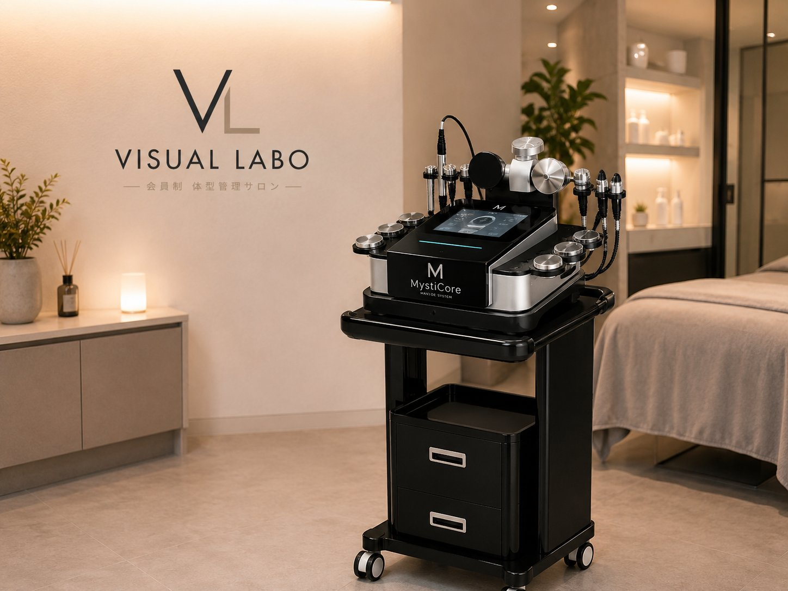
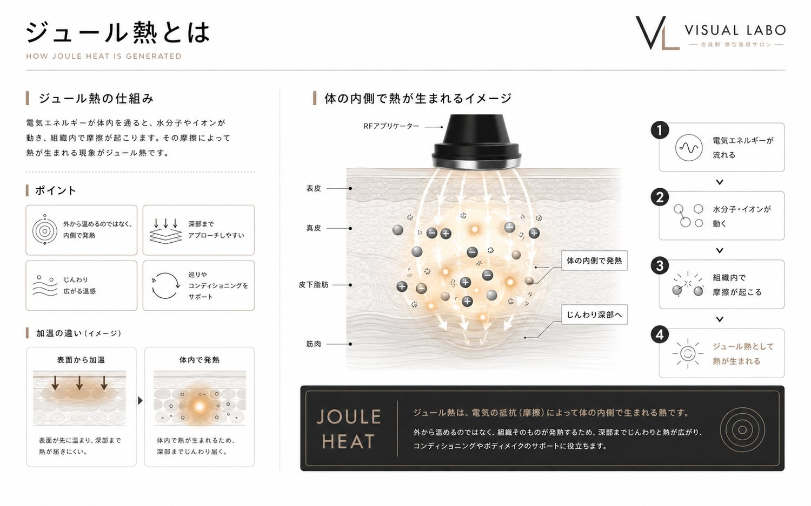
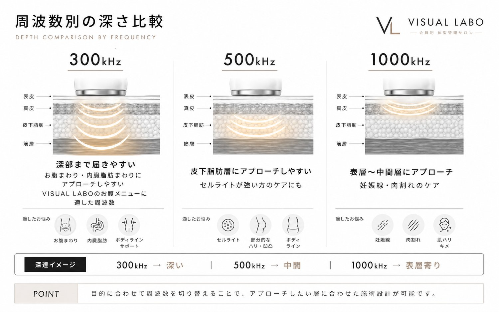
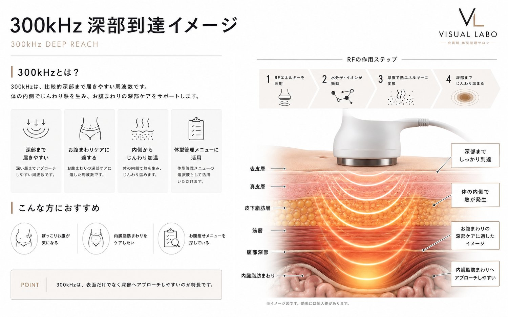
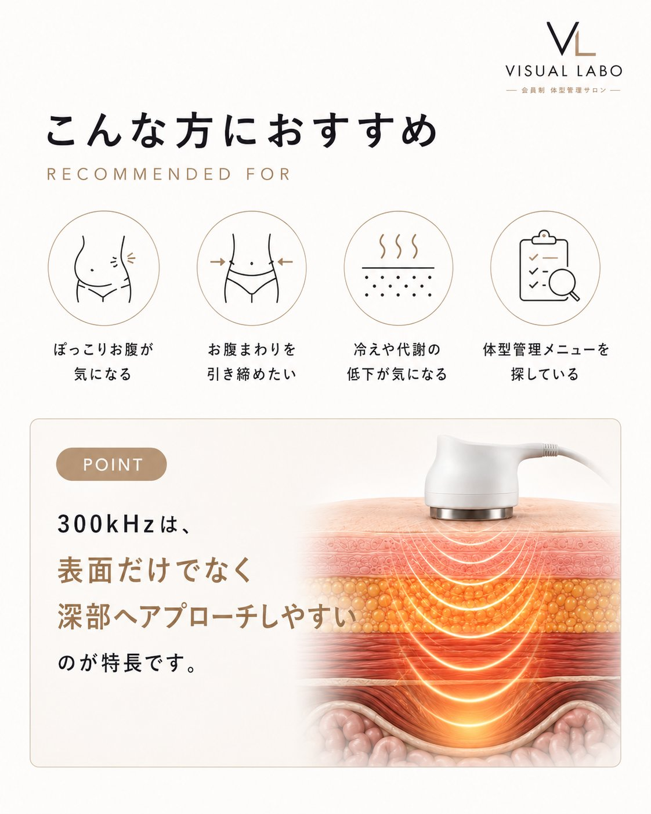
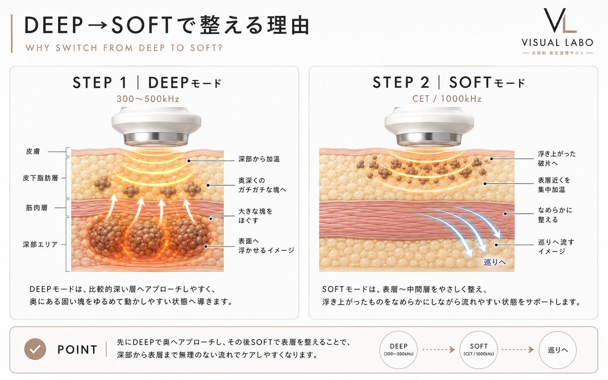

高周波が、体型管理に向く理由を。
高周波（RF＝ラジオ波）とは、1秒間に数十万回以上振動する電気の波。この振動が体の組織に伝わると、分子同士が摩擦を起こして熱が生まれます。カイロやお風呂のように外から温めるのではなく、体の内側から温まるのが、最大の特長です。
熱は、電気抵抗の高い組織ほど生まれやすい性質があります。なかでも脂肪層は抵抗が高く、もっとも熱を持ちやすい層。だからこそ高周波は、お腹まわりなどの体型管理のアプローチに向いています。
組織別の電気抵抗と、熱の生まれやすさ。脂肪層がもっとも熱を持ちやすい。

高周波には「周波数が低いほど、深く届く」という性質があります。MystiCore®は複数の周波数（300・448・500・1000kHz）を使い分け、表層から深部まで状態に合わせてアプローチします。
もっとも低い300kHzは、体の深い層まで到達。皮下脂肪のさらに奥、内臓脂肪のある深部や深層筋までアプローチできます。冷えやすく動かしにくい深部を、芯から温めたいときの主役です。
中間層に届く500kHzは、皮下脂肪やセルライトが気になる層へ。ボディの体型管理で、もっとも標準的に使われる周波数です。
もっとも高い1000kHzは表層に留まり、表皮・真皮・筋膜へ。肌のキメや表層の引き締めを整えたいときに用います。

多くの温熱機器が届きにくい「深い層」。MystiCore®の300kHzは、低い周波数だからこそ体の奥まで到達し、内臓脂肪のある深部や深層筋までアプローチします。表面だけでなく、芯から温めて整えたい——そんなお腹まわり・ウエストの体型管理にこそ向いた周波数です。


体の表面だけでなく、奥からじんわり。高周波の深部加温には、こんなうれしさがあります。
表面だけでなく体の奥からじんわり。深部までしっかり届く、心地よいあたたかさです。
温まることで全身のめぐりを後押し。すっきりとした軽さを感じやすくなります。
冷えてかたくなりがちな部分を、芯から温めて整えます。冷えが気になる方にも。
深部まで温めることは、お腹まわりがすっきり見える体型管理の、いちばんの土台になります。
温めるのは、ゴールではなく手段。
芯から温めるからこそ、このあと脂肪と筋肉に効率よくアプローチできます。
※ 体型管理・コンディショニングを目的とした施術です。医療行為ではなく、感じ方には個人差があります。
セルライトと聞くと、太ももやお尻の凸凹をイメージしがち。でも実は、お腹にもセルライトは潜んでいます。冷えや血行不良で脂肪のまわりに老廃物が絡みつき、お腹の奥で固まった「隠れセルライト」。食事や運動だけではお腹が変わりにくい、ひとつの理由です。
ひとつでも当てはまったら、奥にひそむ「隠れセルライト」のサインかもしれません。
ハンドマッサージでは届きにくい、肌の奥の脂肪層まで高周波の熱が到達。冷えてカチカチに固まりがちなセルライトを、奥からじんわり温めてやわらげます。
温まることで血流・リンパのめぐりが促され、ほぐれた脂肪まわりの老廃物や余分な水分を、流れやすい状態へと導きます。
温熱は肌の土台にもはたらきかけます。温めて、ほぐして、流したあとは、ハリ感のあるすっきりとした印象のお腹のラインを目指せます。
温めて、ほぐして、流れやすい状態へ。
この一連の流れをひとつのマシンでできるのが、MystiCore®の高周波施術。
自己流のケアでは届かない「お腹の奥」こそ、VISUAL LABOへ。
※ 体型管理を目的とした施術であり、医療行為ではありません。感じ方・変化には個人差があります。
VISUAL LABOの高周波施術は、お腹の状態に合わせてモードを切り替え、最後は手技で流しきる。3つのステップで整えます。順番に、意味があります。
ハンドマッサージでは届きにくい、筋肉に近い深い層へ。内側からじんわり熱を生み、冷えて固くなったバターがやわらかくなるように、頑固な脂肪の芯のこわばりをほぐします。奥がゆるむと、埋もれていた凹凸の感触が表面近くに変化することも。スタッフは指先で、その変化を確かめます。
指先に伝わる固さ・凹凸の変化を見極めた、そのタイミングでSOFTモードへ。今度は表面〜中間の層を包み込むように温め、ほぐれたものをめぐりに乗せて、流れやすい状態へと導きます。
流れやすくなったものを、スタッフの手技で鼠蹊部（そけいぶ）のリンパへ向かって流していきます。機械で動かしたものを、最後は人の手で流しきることで、すっきりと軽い印象のお腹へ。

ただ機械をあてるだけでは、ありません。
スタッフがお腹に触れ、固さや凹凸の変化を指先で確かめながら、切り替えのタイミングを見極める。
機械のパワーと、人の手の感覚。ふたつをあわせるのが、VISUAL LABOの施術です。
※ 体型管理を目的とした施術であり、医療行為ではありません。感じ方・変化には個人差があります。